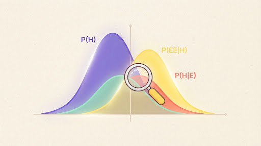

Equivariant Message Passing for Formation Energy Prediction in Inorganic Crystals
Pham, Okafor, Lindqvist · 2026 · Journal of Computational Materials
Mentor chọn bài này vì nó dùng cùng bộ dữ liệu với chương 3 của bạn.
We propose an E(3)-equivariant message passing network that predicts formation energies of inorganic crystals directly from atomic positions and species. On 90,211 structures from a public materials database, the model reduces mean absolute error by 18% over a strong invariant baseline, and by 7% when trained on 3,000 structures. We also report calibrated uncertainty estimates and analyse failure cases on structures far from equilibrium.
Tóm tắt của bạn
Tóm tắt của bạn
Bài đề xuất một mạng truyền thông điệp bất biến theo phép quay để dự đoán năng lượng hình thành. Tác giả nói mô hình tốt hơn baseline 18%, và vẫn tốt hơn khi ít dữ liệu. Họ có thêm phần ước lượng độ bất định.
MGóp ý của Mentor
Với luận văn của bạn: họ dùng 90.000 mẫu, bạn có 3.200. Khoảng cách này có thể nên nằm trong mục 3.2 của bạn.
Huấn luyện trên 90.211 cấu trúc từ một cơ sở dữ liệu vật liệu công khai, chia 80/10/10 theo công thức hóa học, nên cùng một hợp chất không nằm vừa ở train vừa ở test.
We split by composition so that polymorphs of the same compound never appear on both sides of the split.Mở đoạn này
Mình không tìm thấy đoạn nào nói về điều này trong paper. Có thể nó nằm ở phụ lục, phần mình chưa đọc được.
Họ gộp 5 mô hình cùng kiến trúc rồi hiệu chỉnh độ lệch chuẩn bằng một hệ số học trên tập kiểm định.
An ensemble of five models is recalibrated on the validation split with a single scale factor.Mở đoạn này
Cách nhìn này gần với suy luận Bayes; khóa bạn đang học giải thích ý tưởng đó ở phần 3:

Xác suất thống kê: Suy luận BayesBài liên quan
Thêm Semantic Scholar để xem bài trích dẫn và được trích dẫn
- Calibrated Uncertainty for Graph Neural Network Property PredictorsTran, Weiss · 2025 · trích dẫn 21 lần
- Data-Efficient Crystal Graph Networks with Pretrained Atomic EmbeddingsReyes, Chen · 2026 · trích dẫn 3 lần
- Equivariant Features Without Relaxed StructuresAbdi, Moreau · 2026 · trích dẫn 1 lần
- Message Passing Networks for Materials Property Prediction: A SurveyLund, Abara · 2022 · trích dẫn 312 lần
- Transfer Learning for Formation Energy with Limited LabelsSilva, Ng · 2021 · trích dẫn 175 lần
- E(3)-Equivariant Graph Networks: FoundationsBerger, Ito, Salem · 2023 · trích dẫn 96 lần